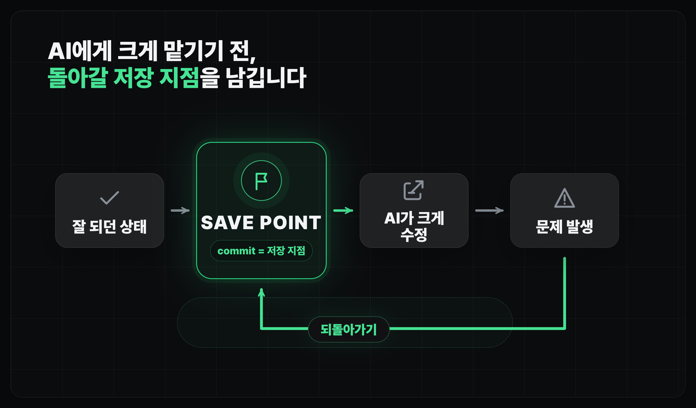
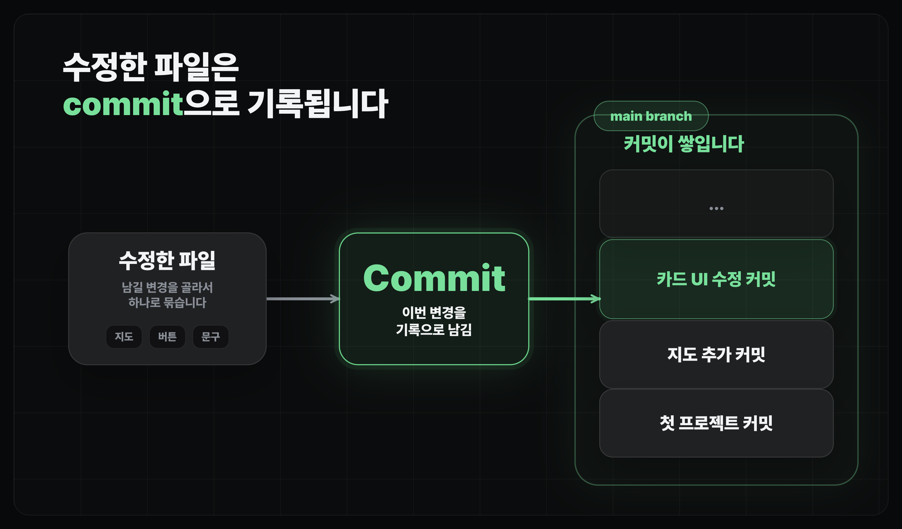
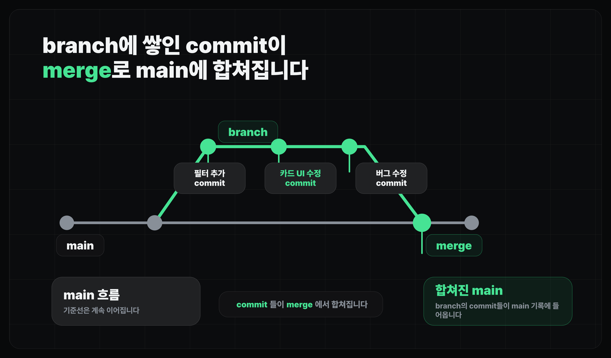

코드 버전 관리하기 (Git & GitHub)
Git 기본기 다지기
AI가 바꾼 코드를 안전하게 저장하고 되돌리기 위한 Git 기본 흐름을 익힙니다.
얻어갈 것
- Git이 어떻게 안전장치 역할을 하는지 이해합니다.
- commit(커밋), branch(브랜치), merge(머지), push/pull을 한 번에 외우지 않고 작업 흐름으로 구분합니다.
설치와 현재 상태 확인
- 먼저 내 컴퓨터에 Git이 설치되어 있는지 확인합니다.
- 설치되어 있지 않다면 AI에게 설치 방법을 안내받되, 실제 설치 명령과 결과를 같이 확인합니다.
- 이미 프로젝트가 있다면
git status로 현재 Git 저장소인지부터 봅니다.
Terminal
git --version # Git 설치 여부 확인 git status # 현재 폴더가 Git 저장소인지 확인
Git을 쓰는 이유
Git은 코드 변경 이력을 저장해서, 문제가 생겼을 때 이전 상태로 돌아갈 수 있게 해주는 도구입니다.

- Git은 코드의 변경 이력을 남겨서, 문제가 생기면 이전 상태로 돌아갈 수 있게 해줍니다.
- 코딩 에이전트는 많은 파일을 빠르게 바꾸기 때문에, 되돌릴 기준점이 없으면 작업이 금방 불안해집니다.
- 커밋은 "여기까지는 괜찮다"는 저장 지점으로 봅니다.
기본 구조
Git의 기본 흐름은 변경을 commit으로 저장하고, branch로 작업 흐름을 나누고, merge로 다시 합치는 방식입니다.

- commit: 지금까지의 변경을 하나의 저장 지점으로 남깁니다. AI에게 작업을 맡기기 전후의 기준점입니다.
- branch: commit이 쌓이는 별도 작업 흐름입니다.
main브랜치를 시작으로, 새 기능이나 수정 등을 할 때 별도의 브랜치를 만들어 사용합니다. - merge: branch에서 만든 commit들을 기준 흐름으로 합칩니다. 보통 확인이 끝난 작업을
main에 합칠 때 씁니다. - push / fetch / pull: GitHub 같은 원격 저장소와 내 컴퓨터의 코드를 주고받습니다. 다음 레슨에서 이어서 봅니다.
브랜치와 머지
브랜치와 머지는 작업을 나눠서 시도한 뒤, 괜찮은 결과만 기준 흐름에 합치는 방법입니다.

- 이 강의에서는 기본 브랜치를
main으로 두고 설명합니다. main은 언제든 돌아갈 수 있는 안정적인 기준선으로 둡니다.- 중요한 기능 개발, 큰 리팩터링, AI에게 여러 파일 수정을 맡기는 작업은 새 branch에서 진행하는 편이 안전합니다.
- 작업이 괜찮다고 확인되면 그 branch를
main으로 merge합니다. - 빠르게 MVP를 만드는 초반에는
main에서 작은 commit을 자주 남기며 바로 진행해도 됩니다. - 다만 에이전트에게 여러 작업을 병렬로 맡기기 시작하면 branch는 거의 필수 안전장치가 됩니다.
실습
- 이번 실습의 목표는 scaffold가 끝난 느좋카페 프로젝트를 첫 커밋으로 저장하는 것입니다.
- 프로젝트 폴더에서 Git을 켜고, 현재 파일 상태를 확인한 뒤, 전체 파일을 staging area(스테이징 영역)에 올립니다.
- 마지막으로
"프로젝트 초기화"라는 메시지로 첫 커밋을 남기고, 현재 브랜치 목록을 확인합니다.
프로젝트 첫 커밋 만들기
git init # 현재 프로젝트 폴더를 Git 저장소로 초기화 git branch -m master main # 기본 브랜치 이름을 main으로 변경 git status # 아직 커밋되지 않은 파일 확인 git add . # 현재 변경된 파일 전체를 커밋 후보로 올리기 git commit -m "프로젝트 초기화" # 첫 저장 지점 만들기 git branch # 현재 브랜치 목록 확인
git status에서Untracked files가 보이면 Git이 아직 추적하지 않는 새 파일이 있다는 뜻입니다.git add .는 현재 폴더 아래 변경을 한 번에 올리는 명령입니다. 처음 커밋에서는 보통 전체 프로젝트를 올려도 괜찮습니다.- 커밋이 끝나면 다시
git status를 실행해서nothing to commit상태인지 확인합니다. git branch에서*표시가 붙은 줄이 지금 내가 서 있는 브랜치입니다.
마무리
- Git은 어려운 명령어 모음이 아니라, AI가 바꾼 코드를 안전하게 실험하고 되돌리기 위한 기록 장치입니다.
- 이번 레슨에서는 로컬 Git의 기본 흐름만 잡고, GitHub와 원격 저장소 연결은 다음 레슨에서 다룹니다.